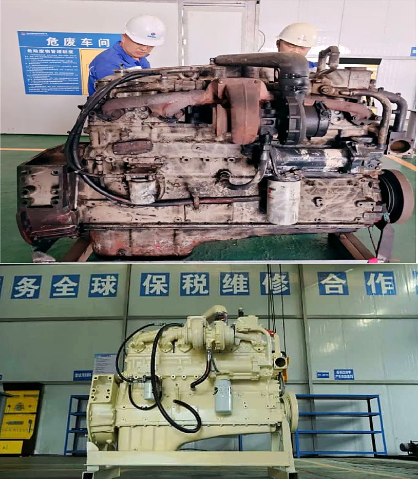

Hainan Free Trade Port's first off-zone bonded repair
Background
The first bonded repair carried out outside a bonded zone in Hainan: a large engine from an overseas oilfield, repaired across the border under customs bond. It broke the old rule that bonded repair could only happen inside a bonded zone.
Client's problem
The engine failed unexpectedly abroad. Local repair capacity was thin, quotes were high and parts took months to arrive. The oilfield stopped working and losses piled up.
Our solution
Using Hainan FTP's bonded maintenance policy, the engine entered our plant under customs supervision, received a full overhaul with complete testing and commissioning, and was re-exported under the rules.
Result
The repair cost far less than doing it abroad, customs was simpler and the turnaround shorter. The engine was delivered back in working order and the oilfield restarted quickly.